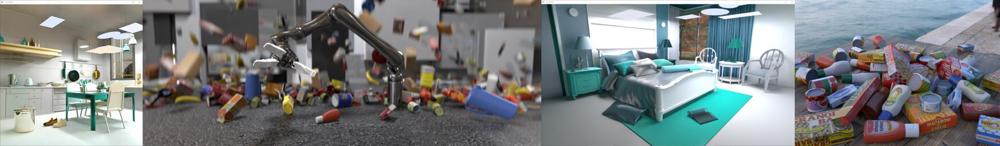
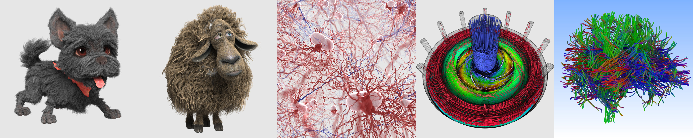

"VisII - A Python-Scriptable Virtual Scene Imaging Interface (2020)
(https://github.com/owl-project/ViSII)
Sample “VisII” images
“Ray Tracing Structured AMR Data Using ExaBricks”. I Wald, S Zellmann, W Usher, N Morrical, U Lang, and V Pascucci. IEEE TVCG(Proceedings of IEEE Vis 2020).
(https://www.willusher.io/publications/exabrick)
Sample “ExaBricks” images (Image Credits: See Authors)
“Accelerating Force-Directed Graph Drawing with RT Cores”. S Zellmann, M Weier, I Wald, IEEE Vis Short Papers 2020.
(https://arxiv.org/pdf/2008.11235.pdf)
“A Virtual Frame Buffer Abstraction for Parallel Rendering of Large Tiled Display Walls”. M Han, I Wald, W Usher, N Morrical, A Knoll, V Pascucci, C R Johnson. IEEE Vis Short Papers 2020.
“Spatial Partitioning Strategies for Memory-Efficient Ray Tracing of Particles”. P Gralka, I Wald, S Geringer, G Reina, Th Ertl. IEEE Symposium on Large Data Analysis and Viusalization (LDAV) 2020.
“Finding Efficient Spatial Distributions for Massively Instanced 3-d Models”. S Zellmann, N Morrical, I Wald, V Pascucci. Eurographics Symposium on Parallel Graphics and Visualization (EGPGV 2020).
Sample “Data Parallel Ray Tracing w/ OWL” images (Image Credits: See Authors)
“High-Quality Rendering of Glyphs Using Hardware-Accelerated Ray Tracing”. S Zellmann, M Aumüller, N Marshak, I Wald. Eurographics Symposium on Parallel Graphics and Visualization (EGPGV 2020).
Sample “ExaBricks” images (Image Credits: See Authors)
“RTX Beyond Ray Tracing: Exploring the Use of Hardware Ray Tracing Cores for Tet-Mesh Point Location”. I Wald, W Usher, N Morrical, L Lediaev, and V Pascucci. In High Performance Graphics Short Papers, 2019
“Using Hardware Ray Transforms to Accelerate Ray/Primitive Intersections for Long, Thin Primitive Types”. I Wald, N Morrical, S Zellmann, L Ma, W Usher, T Huang, V Pascucci. Proceedings of the ACM on Computer Graphics and Interactive Techniques (Proceedings of High Performance Graphics), 2020
(https://www.willusher.io/publications/owltubes)
"Efficient Space Skipping and Adaptive Sampling of Unstructured Volumes Using Hardware Accelerated Ray Tracing. N Morrical, W Usher, I Wald, V Pascucci. In IEEE VIS Short Papers, 2019
The OWL repo itself contains a list of samples intended to only highlight/demonstrate certain individual technologies such as how to create a group, how to do multi-level instancing, etc. Here a overview over some of those:
ll08-sierpinski
The latest sample, demonstrating multi-level instancing:
One geometry that contains exactly one pyramid
N levels of instances, each of which creates four shifted and scaled instances of the previous level
Number of levels configurable via command-line, via --num-levels <N>
PNG file produced by this sample
ll07-groupOfGroups
PNG file produced by this sample
ll06-rtow-mixedGeometries
Extends ll05 by replacing some of the spheres with boxes
Boxes are realized as triangle meshes, and organized in three different geometries (again, once per material).
To support both boxes and user geometries this sample is the first to use two different groups (one triangle group, one user geom group)
In this sample, device-code traces into the two different groups sequentially, then picks the closer of the two hitpoints
PNG file produced by this sample
ll05-rtow
The first-ever “real” example that re-implements Ingo Wald original OptiX-6 based “Ray Tracing in one Weekend” example with OWL.
Three different CH programs - one each for Lambertian, Metal, and Dielectric.
Spheres are organized in three different geometry groups (one per material type), each of which has multiple spheres.
Material parameters are stored per-material, in a buffer per each geometry (i.e., the Lambertian spheres geom has a buffer of Lambertian material data, etc).
PNG file produced by this sample
ll04-userGeometry-boundsProg
Similar to ll03, except that bounds are computed via a bounding box program
Bounds program specified in the device-program, and added to the user geometry type, then automatically run on device (on owl-allocated memory) when the accel structure needs rebuild (same as OptiX 6 bounds program).
PNG file produced by this sample
ll03-userGeometry-boundsBuffer
Replaces the triangle meshes in ll02 with user geometry
User geometry uses an intersection program to implement a sphere shape
in this sample, bounding box information for user geoms is passed via a (host-supplied) buffer of precomputed bounding boxes
PNG file produced by this sample
ll02-multipleTriangleGroups
Replaces single box with eight different ones
Each box is its own triangle mesh, with its own SBT entry
SBT entry stores the material data, closest-hit shader pulls this to shade boxes with different colors.
Still one accel that contains all eight meshes
PNG file produced by this sample
ll01-simpleTriangles
This was the very first sample ever implemented for OWL (at a time when OWL could do exactly this sample, and nothing else).
Key features:
a single triangle mesh (the box) with a single SBT entry
a single bottom-level acceleration structure
a minimalistic miss program that uses launch index to compute the black-and-red-squares pattern
a closest-hit program that computes geometry normal and dot N-dot-D shading.